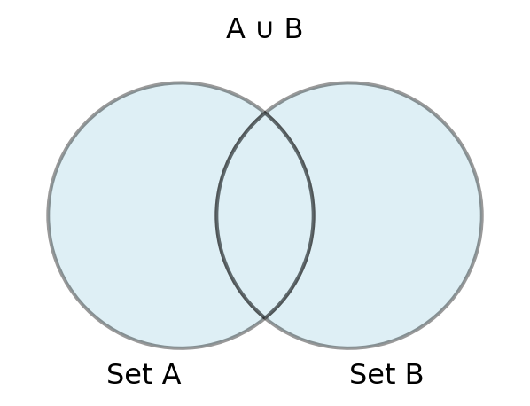
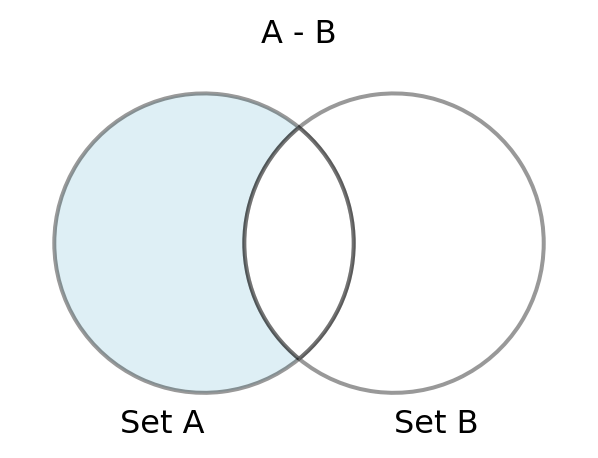

Relational Algebra 1
Lecture 7
Tuesday - Feb 4, 2025
Housekeeping
Discussion items
- Del.4 - Video Pitch - due Feb. 9, SUN
| Module | Week | Date | Day | Notes and Lectures | Activities and due dates |
|---|---|---|---|---|---|
| Relational Alg. | 4 | 2/4 | Tue | L7:Relational Algebra 1 | PQ2:Relational Algebra; HW2:Entity Relation Models |
| Relational Alg. | 4 | 2/6 | Thu | L8:Relational Algebra 2 | |
| Relational Alg. | 4 | 2/9 | Sun | Prj4:Video Pitch; Dis2:Relational Alg. | |
| Relational Alg. | 5 | 2/10 | Mon | Last day for progress reports | |
| Relational Alg. | 5 | 2/11 | Tue | L9:Analysis and Normal Forms 1 | |
| Relational Alg. | 5 | 2/12 | Wed | Career Fair (10am-3pm) | |
| Relational Alg. | 5 | 2/13 | Thu | NO CLASS - Interview Day (10am-3pm) | Q2:Relational Algebra |
| Relational Alg. | 5 | 2/16 | Sun | HW3:Modeling Your World |
Relational Models
Relational Model - Entities
- Tables correspond with entities and represent the fundamental object of manipulation.
- Tables have multiple columns called fields, each with unique names and data types. Fields correspond to attributes in our ER model.
- Tables have multiple rows called records that represent individual instances of the data stored in the table. These are sometimes called tuples.
- Relationships between tables are documented as keys. Keys are simply fields in a table, designated as keys. Keys have special properties and the database keeps track of them differently.
- A complete definition entities, attributes and relations, along with any data types and constraints is called a schema.
CREATE TABLE students (
student_id INT PRIMARY KEY,
name VARCHAR(100),
year INT
);
CREATE TABLE courses (
course_id INT PRIMARY KEY,
title VARCHAR(100),
credit_hours INT
);
CREATE TABLE student_courses (
student_id INT,
course_id INT,
FOREIGN KEY (student_id) REFERENCES students(student_id),
FOREIGN KEY (course_id) REFERENCES courses(course_id),
PRIMARY KEY (student_id, course_id)
);In the example above, we define two entities: students and courses, and establish a many-to-many relationship between them. The relationships are documented in a separate table with foreign keys. The individual rows in the student-courses table represent pairs of students and courses or “student-course tuples”.
Relational Model - Attributes
Attributes
Attributes are represented as fields or columns.
A domain is the set of allowed values for each field.
Field values are (normally) required to be atomic (indivisible).
A special value NULL is a member of every domain.
The DB designer must specify whether NULL is allowed or not (NOT NULL)
Attributes take on specific data types. A database DDL specifies the data types:
- Strings (VARCHAR, CHAR)
- Numeric (NUMBER, INTEGER, FLOAT)
- Date (DATE, DATETIME)
- Objects (BFILE)
Relation Notation
Tables or entities can be represents in relation notation,
- relationName (ID, Att1, … , AttN)
For example:
- student( id, name, year )
- course( id, title, credit_hours )
- student_course( id, student_id, course_id )
We can also add modifiers to individual attributes:
- student( id [PK], name, year )
- course( id [PK], title, credit_hours)
- student_course( id [PK], student_id[FK], course_id[FK])
Relational Model - Attribute example with data
Questions
What is the domain for each field?
Can you write the relation set for each table?
Can you draw a Chen diagram for these tables?
Can you draw a Crow’s Foot diagram for these tables?
Does the column order matter?
Relational Model - Keys
- A key can be any field (or fields) in a table.
- A key is used to uniquely identify each tuple (or row or record).
- Keys can take on any data type.
- A record can have multiple keys, as long as they uniquely identify the record.
- A super key is a key of any size (one or more fields)
- A candidate key is a key of minimal size (minimal number of fields)
- A primary key is selected by the designer from one of the candidate key to become the primary identifier of the tuples in the relation
- Any two tuples in the relation are prohibited from having the same value on the key attributes at the same time
- Primary keys are typically size 1 but not necessarily.
- Every relation must have a primary key
- Keys are selected based on the intrinsic definition of the attributes, NOT on the existing values at any point in time
Relational Model - Key example with data
Questions
What columns can uniquely identify each table?
Can you identify super keys in each table?
Can you identify candidate keys in each table?
What is an appropriate primary key for each table?
Would student.name be an appropriate key?
Relational Model - Relationships
Relationships between tables and rows are modeled by connecting individual records using their keys.
A foreign key is a column(s) in a table that contains copies of the keys from another table referencing the related rows.
A foreign key must contain valid references to existing records in an existing table or must be null.
An attribute in a table can be simultaneously the primary key for that table and a foreign key referencing a column of another table
Attributes which are FKs do not need to have the same name as the referenced key.
Cardinalty and participation are represented through foreign keys and integrity constraints.
Relational Model - Relationship example with data
Questions
What changed in the students table?
What are the primary keys in each table?
What is the column labled “crs_id”?
What is the cardinality and participation of these tables?
Relational Model - Integrity Constraints
An integrity constraint is:
- a condition that must be true for every instance (row, record, tuple) in the relation (table).
- specified in the definition of the database schema
- verified by the DBMS at every CRUD operation (create, read, update, delete)
Domain integrity
- ensure fields always contain the correct data
- by data type
- by length or size
- by negative values
- by closed set of allowed values
- by NULL or NOT NULL values
- by UNIQUE or not
Referential integrity
- maintains cardinality and participation
- primary keys must be unique
- foreign keys must exist
Using integrity constraints the DBMS will maintain a perfect state for your database. By specifying integrity constraints, a designer lets the DBMS do the work for them.
Relational Model - Relationship example with data
erDiagram
AUTHORS ||--o{ BOOKS : "have"
AUTHORS {
int id
string name
date birthdate
}
BOOKS {
int id
string title
date publication_date
int author_id
}
Questions
- Does the ER diagram on the left match the tables on the right?
- How do we ensure partial or total participation?
- Write the detailed relation sets for this model.
- How would we modify the tables to create a many-to-many relationship?
Relational Model - Relationship example with data
erDiagram
AUTHORS }|--o{ BOOKS : "have"
AUTHORS {
int id
string name
date birthdate
}
BOOKS {
int id
string title
date publication_date
int author_id
}
Detailed relation sets
book(id [PK], title [NOT NULL], publication_date [NOT NULL])
author( id[PK], name [NOT NULL], birthdate [NOT NULL])
book_author( id [PK], book_id [FK,NOT NULL], author_id [FK,NOT NULL])
FK(book_id) references (book.id)
FK(author_id) references (author.id)
Relational Model - Relationship example with data
erDiagram
AUTHORS }|--o{ BOOKS : "have"
AUTHORS {
int id
string name
date birthdate
}
BOOKS {
int id
string title
date publication_date
int author_id
}
Questions
How would you modify this to ensure that books exactly one author?
How would you modify this to ensure that authors at least one book?
How would you modify this to ensure that authors has exactly one book?
Could you change these features in real-time?
Relational Model - Unanswered questions
- How would I model a composite attribute?
- A composite attribute is something like full name, for example John Denes Leonard II. You’ll probably want to give each atomic piece of the full name it’s own field/attribute and allow individual pieces to be NULL if they aren’t used. THEN, you might consider setting full name to be a calculated field, so that it is computed whenever needed by combining the individual first, middle, last, and initial.
- How would I model a multivalued attribute?
- A multivalued attribute is something like phone number, that is, a person can have zero or more phone numbers. There are several solutions, either by adding a person_id foreign key to the phone number relation, OR by creating a separate link/join table (see the previous slide) and adjust the attributes (e.g., NOT NULL, UNIQUE, etc.) to get the cardinality and participation you’re after.
- How would I model a weak entity?
- A weak entity is one that depends on a strong entity to survive. That is, if the parent strong entity is deleted, the weak entity is no longer needed. This is modeled using a TRIGGER in the schema. When the string entity is deleted, all corresponding weak entities are deleted, too.
Query Languages
Query Language Family Tree
Relational Algebra
- Expressions are applied as a series of steps to achieve a specific result.
- The order of the steps matters.
Relational Calculus
- Non-procedural. Tells you what the result should be without providing steps
- Can be converted to relational algebra
SQL
- A modified, practical implementation of Relational Algebra.
- Not exact, but close enough and VERY useful!
Relational Algebra
Relational Algebraic Operators and Operations
Relational Operators
- Selection σ
- Projection π
- Rename ρ
Set Operators
- Union ∪
- Intersection ∩
- Difference -
Logical Operators
- And ∧
- Or ∨
- Not ¬
Joins and Products
- Natural join \(\bowtie\)
- Theta join \(\bowtie_{\theta}\)
- Left outer join ⟕
- Right outer join ⟖
- Full outer join ⟗
- Cartesian product ⨯
- Division ÷
Additional Resources
- Relational Algebra Calculator : https://dbis-uibk.github.io/relax/landing
- Practice Exercises (HTML): http://openclassroom.stanford.edu/MainFolder/courses/cs145/old-site/docs/backup/ra-exercises.html
- More practice exercises (PDF)
Food Truck Example
Here’s an example of a relation (table) for a food truck with four attributes: ItemID, ItemName, Category, and Price. This relation represents a menu of items sold at the food truck.
Relation: Menu
Menu( ItemID, ItemName, Category, Price )
Sample Data
| ItemID | ItemName | Category | Price |
|---|---|---|---|
| 1 | Tacos | Main | 5.00 |
| 2 | Burrito | Main | 6.50 |
| 3 | Quesadilla | Main | 5.75 |
| 4 | Chips & Salsa | Side | 2.50 |
| 5 | Soda | Drink | 1.50 |
| 6 | Water | Drink | 1.00 |
| 7 | Guacamole | Side | 3.00 |
What items cost more than $6.00?
\[ \pi_{\text{ItemName}}(\sigma_{\text{Price} > 6}(\text{Menu})) \]
What is the price of water?
\[ \pi_{\text{Price}}(\sigma_{\text{ItemName}='Water'}(\text{Menu})) \]
What items are sold as main course items?
\[ \pi_{\text{ItemName}}(\sigma_{\text{Category}='Main'}(\text{Menu})) \]
Food Truck Example
Here’s an example of a relation (table) for a food truck with four attributes: ItemID, ItemName, Category, and Price. This relation represents a menu of items sold at the food truck.
Relation: Menu
Menu( ItemID, ItemName, Category, Price )
Sample Data
| ItemID | ItemName | Category | Price |
|---|---|---|---|
| 1 | Tacos | Main | 5.00 |
| 2 | Burrito | Main | 6.50 |
| 3 | Quesadilla | Main | 5.75 |
| 4 | Chips & Salsa | Side | 2.50 |
| 5 | Soda | Drink | 1.50 |
| 6 | Water | Drink | 1.00 |
| 7 | Guacamole | Side | 3.00 |
What sides cost less than $3.00?
\[ \pi_{\text{ItemName}}(\sigma_{\text{Category}='Side' \land \text{Price} < 3}(\text{Menu})) \]
What is ItemID of a taco?
\[ \pi_{\text{Price}}(\sigma_{\text{ItemName}='Water'}(\text{Menu})) \]
I want the list and price of an order of #3, #4 and #6
\[ \pi_{\text{ItemName, Price}}(\sigma_{\text{ItemID} = 3 \lor \text{ItemID} = 4 \lor \text{ItemID} = 6}(\text{Menu})) \]
Basic Operations
Introduction to Relational Algebra
Relational algebra is a formal system for manipulating relations, foundational for querying relational databases. This section introduces the core principles and significance of relational algebra in database systems.
- Relational algebra is a procedural query language.
- It provides the formal foundation for relational database operations.
- Operations in relational algebra manipulate sets of tuples.
- The basic operations include selection, projection, and union.
- Understanding relational algebra is crucial for effective query optimization.

Relational algebra underpins the structure and functionality of modern relational databases.
Selection Operation in Relational Algebra
The selection operation retrieves rows from a relation that meet specified conditions. It allows narrowing down data based on predicates, forming a key part of querying in relational databases.
σ - Selection (sigma)
- Selection filters rows based on a condition (predicate).
- The result includes only those tuples that satisfy the predicate.
- Denoted as σ(condition)(Relation)
- It’s a unary operation, meaning it operates on a single relation.
- The result of a selection can be used as input into subsequent operations.
- Selection is often used in conjunction with other operations like projection.
- condition can contain any relational operator (e.g., =, <, >=, etc.)
Unicode examples
Below are examples of what these statement will look like on the Canvas quiz.
σ(ID=3)(Courses)
σ(Course=‘CMSC408’)(Courses)
σ(Enrl<=100)(Courses)
Properties of the selection operator
Definition
\[ \sigma_{\rho}(R) = { t \mid t \in R \text{ and } \rho(t) == \text{true} } \]
- where \(t\) is a row in \(R\),
- \(\rho\) (the predicate) is a boolean expression that evaluates true or false for all rows in \(R\),
- \(\rho\) consists of one or more terms connected by \(\land\)(and), \(\lor\)(or), \(\neg\)(not) function.
- Terms in \(\rho\) are simple relational expressions evaluated using \(=\), \(\ne\), \(\<\), \(>\), \(\le\), \(\ge\).
Properties
- Idempotent - can be applied multiple times without side effects:
\[ \sigma_{A}(R) = \sigma_{A} ( \sigma_{A}(R) ) \]
- Commutative - the order of application doesn’t matter:
\[ \sigma_{A}( \sigma_{B}(R) ) = \sigma_{B}( \sigma_{A}(R) ) \]
- Distributed - operations can be subdivided and combined
\[ \begin{aligned} \sigma_{A \land B}( R ) &= \sigma_{A}(R) \cap \sigma_{B}(R) \ &= \sigma_{A}( \sigma_{B}(R) ) = \sigma_{B}( \sigma_{A}(R) ) \ \sigma_{A \lor B}( R ) &= \sigma_{A}(R) \cup \sigma_{B}(R) \end{aligned} \]
Selection - σ - Example 1
Given the Courses(ID,Course,Term,Enrl) below:
| ID | Course | Term | Enrl |
|---|---|---|---|
| 1 | CMSC301 | Fall 2024 | 220 |
| 2 | CMSC408 | Fall 2024 | 175 |
| 3 | CMSC445 | Fall 2024 | 37 |
| 4 | CMSC475 | Fall 2024 | 128 |
| 5 | CMSC408 | Fall 2023 | 125 |
σ(ID=3)(Courses) returns:
| ID | Course | Term | Enrl |
|---|---|---|---|
| 3 | CMSC445 | Fall 2024 | 37 |
Selection - σ - Example 2
Given the Courses(ID,Course,Term,Enrl) below:
| ID | Course | Term | Enrl |
|---|---|---|---|
| 1 | CMSC301 | Fall 2024 | 220 |
| 2 | CMSC408 | Fall 2024 | 175 |
| 3 | CMSC445 | Fall 2024 | 37 |
| 4 | CMSC475 | Fall 2024 | 128 |
| 5 | CMSC408 | Fall 2023 | 125 |
σ(Course=‘CMSC408’)(Courses) returns:
| ID | Course | Term | Enrl |
|---|---|---|---|
| 2 | CMSC408 | Fall 2024 | 175 |
| 5 | CMSC408 | Fall 2023 | 125 |
Selection - σ - Example 3
Given the Courses(ID,Course,Term,Enrl) below:
| ID | Course | Term | Enrl |
|---|---|---|---|
| 1 | CMSC301 | Fall 2024 | 220 |
| 2 | CMSC408 | Fall 2024 | 175 |
| 3 | CMSC445 | Fall 2024 | 37 |
| 4 | CMSC475 | Fall 2024 | 128 |
| 5 | CMSC408 | Fall 2023 | 125 |
σ(Enrl<=100)(Courses) returns:
| ID | Course | Term | Enrl |
|---|---|---|---|
| 3 | CMSC445 | Fall 2024 | 37 |
Projection Operation in Relational Algebra
The projection operation retrieves specific columns from a relation. It enables focusing on certain attributes while discarding others, making it a key operation in relational queries.
Π - Projection operator
- Projection reduces the relation to specific columns (attributes).
- Denoted as Π(attribute1, attribute2,…)(Relation).
- It’s used to eliminate unnecessary or redundant data.
- Like selection, projection is a unary operation.
- Projection also drops duplicate records (SQL doesn’t!)!
- Projection can be combined with other operations for complex queries.
Examples
Given a relation Courses(ID,Course,Term,Enrl), the following are valid unicode examples of projection:
Π(ID,Course)(Courses):
Π(Course)(Courses):
Π(Term)(Courses):
Π(Term,ID)(Courses):
Projection helps streamline query results by focusing on relevant attributes.
Definition of projection
Definition \[ \pi_{A_1, A_2, \dots, A_n}(R) = { t\[A_1, A_2, \dots, A_n\] \mid t \in R } \]
- where \(t\) is a row in \(R\),
- \(A_1, A_2, \dots, A_n\) are the attributes (columns) of relation (R),
- The projection operator returns a new relation containing only the specified attributes \(A_1, A_2, \dots, A_n\) from \(R\),
- The resulting relation may contain duplicate rows, which are usually removed in standard relational algebra (i.e., it becomes a set rather than a multiset).
Explanation
- The projection operator \(\pi\) selects certain columns (attributes) from the relation \(R\), discarding the others.
- It operates by returning only the specified columns for each tuple (row) in \(R\), effectively creating a “vertical slice” of the relation.
- Duplicate tuples in the result are eliminated to ensure the output is a valid set.
Properties of projection
- Idempotent – Projection can be applied multiple times without side effects:
\[ \pi_{A_1, A_2, \dots, A_n}( \pi_{A_1, A_2, \dots, A_n}(R) ) = \pi_{A_1, A_2, \dots, A_n}(R) \]
- Commutative – The order of projection on overlapping sets of attributes doesn’t matter:
\[ \pi_{A_1, A_2}( \pi_{A_2, A_3}(R) ) = \pi_{A_2}( \pi_{A_1, A_3}(R) ) \]
(if \(A_1\), \(A_2\), and \(A_3\) are overlapping or compatible)
Non-distributive – Projection does not distribute over selection, but it interacts in specific ways:
- Projection over selection (you can select first, then project):
\[ \pi_{A_1, A_2}( \sigma_{B}(R) ) = \pi_{A_1, A_2}(R) \quad \text{if } B \text{ involves only attributes } A_1, A_2 \]
- Selection over projection (you cannot project first if selection involves non-projected attributes):
\[ \sigma_{B}( \pi_{A_1, A_2}(R) ) \quad \text{undefined if } B \text{ involves attributes not in } A_1, A_2 \]
Explanation of Properties
- Idempotent: Reapplying projection on the same set of attributes does not change the result. Once the attributes are reduced, further projection on the same set will not alter the relation.
- Commutative: When projecting on overlapping or compatible sets of attributes, the order of application does not matter (the resulting attributes will still be the same).
- Non-distributive: Unlike selection, projection cannot be freely distributed over operations such as selection, because projection limits the available attributes. It must respect the interaction between available attributes and conditions in the selection.
Projection - Π - Example 1
Given the Courses(ID,Course,Term,Enrl) below:
| ID | Course | Term | Enrl |
|---|---|---|---|
| 1 | CMSC301 | Fall 2024 | 220 |
| 2 | CMSC408 | Fall 2024 | 175 |
| 3 | CMSC445 | Fall 2024 | 37 |
| 4 | CMSC475 | Fall 2024 | 128 |
| 5 | CMSC408 | Fall 2023 | 125 |
Π(ID,Course)(Courses) returns:
| ID | Course |
|---|---|
| 1 | CMSC301 |
| 2 | CMSC408 |
| 3 | CMSC445 |
| 4 | CMSC475 |
| 5 | CMSC408 |
Projection - Π - Example 2
Given the Courses(ID,Course,Term,Enrl) below:
| ID | Course | Term | Enrl |
|---|---|---|---|
| 1 | CMSC301 | Fall 2024 | 220 |
| 2 | CMSC408 | Fall 2024 | 175 |
| 3 | CMSC445 | Fall 2024 | 37 |
| 4 | CMSC475 | Fall 2024 | 128 |
| 5 | CMSC408 | Fall 2023 | 125 |
Π(Course)(Courses) returns:
| Course |
|---|
| CMSC301 |
| CMSC408 |
| CMSC445 |
| CMSC475 |
Projection - Π - Example 3
Given the Courses(ID,Course,Term,Enrl) below:
| ID | Course | Term | Enrl |
|---|---|---|---|
| 1 | CMSC301 | Fall 2024 | 220 |
| 2 | CMSC408 | Fall 2024 | 175 |
| 3 | CMSC445 | Fall 2024 | 37 |
| 4 | CMSC475 | Fall 2024 | 128 |
| 5 | CMSC408 | Fall 2023 | 125 |
Π(Term)(Courses) returns:
| Term |
|---|
| Fall 2024 |
| Fall 2023 |
Projection - Π - Example 4
Given the Courses(ID,Course,Term,Enrl) below:
| ID | Course | Term | Enrl |
|---|---|---|---|
| 1 | CMSC301 | Fall 2024 | 220 |
| 2 | CMSC408 | Fall 2024 | 175 |
| 3 | CMSC445 | Fall 2024 | 37 |
| 4 | CMSC475 | Fall 2024 | 128 |
| 5 | CMSC408 | Fall 2023 | 125 |
Π(Term,ID)(Courses) returns:
| Term | ID |
|---|---|
| Fall 2024 | 1 |
| Fall 2024 | 2 |
| Fall 2024 | 3 |
| Fall 2024 | 4 |
| Fall 2023 | 5 |
Union Operation in Relational Algebra
The union operation combines tuples from two relations, eliminating duplicates. It’s an essential set operation in relational algebra, used for merging query results.
∪ - Union Operator
- Union combines two relations into a single relation.
- Both relations must be union-compatible (same number of attributes and domains).
- Denoted as R ∪ S.
- Duplicates are automatically removed from the result.
- Union is a binary operation, meaning it operates on two relations.

Examples
Courses1 ∪ Courses2
Courses1 ∪ Courses3
The union operation enables the merging of datasets in a relational context.
Definition of Union Operator
Definition
\[ R_1 \cup R_2 = { t \mid t \in R_1 \text{ or } t \in R_2 } \]
- where \(t\) is a row (tuple),
- \(R_1\) and \(R_2\) are relations (tables) with the same attributes,
- The union operation returns a new relation containing all distinct rows that are present in either \(R_1\), \(R_2\), or both,
- Duplicate rows are eliminated in the result, ensuring the output is a set, not a multiset.
Properties of Union
- Idempotent – Applying the union of a relation with itself doesn’t change the result:
\[ R \cup R = R \]
- Commutative – The order of relations in a union operation doesn’t matter:
\[ R_1 \cup R_2 = R_2 \cup R_1 \]
- Associative – The grouping of union operations doesn’t affect the result:
\[ (R_1 \cup R_2) \cup R_3 = R_1 \cup (R_2 \cup R_3) \]
- Union with an empty set – The union of a relation with an empty set is the relation itself:
\[ R \cup \emptyset = R \]
- Union distributes over intersection – The union of two relations distributes over their intersection:
\[ R_1 \cup (R_2 \cap R_3) = (R_1 \cup R_2) \cap (R_1 \cup R_3) \]
Explanation of Properties
- Idempotent: Combining a relation with itself does not add any new rows since the union eliminates duplicates.
- Commutative: The union is symmetric, so the order of relations does not affect the result.
- Associative: You can group union operations in any way, and the result will be the same.
- Union with an empty set: Union with an empty relation results in the original relation, as the empty set contributes no rows.
- Distributed: Union distributes over intersection in a way that respects the structure of both operations.
Union - ∪ - Example 1
Given Courses1( Course,Term):
| Course | Term |
|---|---|
| CMSC301 | Fall 2024 |
| CMSC408 | Fall 2024 |
| CMSC408 | Fall 2023 |
and Courses2( Course,Term ):
| Course | Term |
|---|---|
| CMSC110 | Fall 2024 |
| CMSC201 | Fall 2024 |
| CMSC475 | Fall 2023 |
| CMSC408 | Fall 2024 |
Courses1 ∪ Courses2 returns:
| Course | Term |
|---|---|
| CMSC301 | Fall 2024 |
| CMSC408 | Fall 2024 |
| CMSC408 | Fall 2023 |
| CMSC110 | Fall 2024 |
| CMSC201 | Fall 2024 |
| CMSC475 | Fall 2023 |
Union - ∪ - Example 2
Given Courses1( Course,Term):
| Course | Term |
|---|---|
| CMSC301 | Fall 2024 |
| CMSC408 | Fall 2024 |
| CMSC408 | Fall 2023 |
and Courses3( Course,Term ):
| Term | Term_code |
|---|---|
| Fall 2022 | 202310 |
| Fall 2023 | 202410 |
| Fall 2024 | 202510 |
Courses1 ∪ Courses3 returns:
Because the schema for Courses1 and Courses3 are different, that is, the number, names, and domains of the columns don’t match exactly, the two relations cannot be combined.
The term Union Compatible is used to describe two relations with the same number, names, and domains of columns.
Combining Selection and Projection
In real-world queries, selection and projection are often combined to both filter and reduce data. This allows for more refined and efficient query results.
In relational algebra operations can be chained, that is, the results from one operation can be directly used inside another operation.
- Suppose we have a relation Students(Name, Grade).
- Query: Π(Name)(σ(Grade > 75)(Students)).
- The result includes only the names of students with grades above 75.
- Combining operations allows for more complex and specific queries.
- Selection and projection together form the backbone of query design.
- Relational operations are ordered from the inside to the outside.
- Given this query: Π(Name)(σ(Grade > 75)(Students))
- First, the selection operation is performed, resulting in a subset of the original relation,
- then, the projection operation is performed, reducing the number of columns in the result.
Combining operations enables precise and targeted query results in relational databases.
Combined Example 1
Given Students( ID,Name,Major,GPA,Grad_Year):
| ID | Name | Major | GPA | Grad_Year |
|---|---|---|---|---|
| V10101 | Alice | CS | 3.5 | 2024 |
| V10102 | Bob | Math | 3.8 | 2023 |
| V10103 | Carol | CS | 3.2 | 2025 |
| V10104 | Dave | Physics | 3.9 | 2023 |
Find the Names and GPAs of all students who are expected to graduate in 2023.
Π(Name,GPA)(σ(Grad_Year=2023)(Students))
| Name | GPA |
|---|---|
| Bob | 3.8 |
| Dave | 3.9 |
Combined Example 2
Given Students( ID,Name,Major,GPA,Grad_Year):
| ID | Name | Major | GPA | Grad_Year |
|---|---|---|---|---|
| V10101 | Alice | CS | 3.5 | 2024 |
| V10102 | Bob | Math | 3.8 | 2023 |
| V10103 | Carol | CS | 3.2 | 2025 |
| V10104 | Dave | Physics | 3.9 | 2023 |
Find the majors of all students with a GPA greater than 3.5
Π(Major)(σ(GPA>3.5)(Students))
| Major |
|---|
| Math |
| Physics |
Combined Example 3
Given Students( ID,Name,Major,GPA,Grad_Year):
| ID | Name | Major | GPA | Grad_Year |
|---|---|---|---|---|
| V10101 | Alice | CS | 3.5 | 2024 |
| V10102 | Bob | Math | 3.8 | 2023 |
| V10103 | Carol | CS | 3.2 | 2025 |
| V10104 | Dave | Physics | 3.9 | 2023 |
Find the ID and Names of all students in computer science.
Π(ID,Name)(σ(Major=CS)(Students))
| ID | Name |
|---|---|
| V10101 | Alice |
| V10103 | Carol |
Larger Reporting Systems
Relational algebra operations are commonly used in reporting systems to query data, extract insights, and generate reports. Below are examples of larger operations as applied in practice.
Example: Generating a list of employees eligible for a bonus.
- Selection operation to filter eligible employees based on criteria (e.g., performance).
- Projection to display only relevant fields (e.g., Name, Department).
- Union to combine results from different departments.
Example: Generating a report of products sold by specific vendors.
- Selection to filter products by vendor ID.
- Projection to display product name and vendor details.
- Cartesian product to cross-reference products with vendor data.
Example: Compiling a list of employees not assigned to any projects.
- Anti-join to find employees not in the project assignment table.
- Projection to show employee names and departments.
- Set difference to exclude employees with assignments from the employee list.
Example: Producing a report of sales trends over time.
- Selection to filter sales data by date range.
- Aggregation to calculate sales totals by month or quarter.
- Join to merge sales data with product or category details.
Note that these examples introduce additional operators to complement the Selection, Projection and Union already discussed. That’s what we’ll discuss next!
Larger Reporting Systems
On the preceding slide:
Each of these examples is considered a single query even though they contains multiple single relational operations.
Your semester long project must document 20 unique queries. To accomplish this, you’ll need plenty of entities (tables).
Larger Reporting Systems
Relational algebra operations are commonly used in reporting systems to query data, extract insights, and generate reports. Below are examples of larger operations as applied in practice.
Example: Generating a list of employees eligible for a bonus.
- Selection operation to filter eligible employees based on criteria (e.g., performance).
- Projection to display only relevant fields (e.g., Name, Department).
- Union to combine results from different departments.
Example: Generating a report of products sold by specific vendors.
- Selection to filter products by vendor ID.
- Projection to display product name and vendor details.
- Cartesian product to cross-reference products with vendor data.
Example: Compiling a list of employees not assigned to any projects.
- Anti-join to find employees not in the project assignment table.
- Projection to show employee names and departments.
- Set difference to exclude employees with assignments from the employee list.
Example: Producing a report of sales trends over time.
- Selection to filter sales data by date range.
- Aggregation to calculate sales totals by month or quarter.
- Join to merge sales data with product or category details.
Note that these examples introduce additional operators to complement the Selection, Projection and Union already discussed. That’s what we’ll discuss next!
Larger Reporting Systems
On the preceding slide:
Each of these examples is considered a single query even though they contains multiple single relational operations.
Your semester long project must document 20 unique queries. To accomplish this, you’ll need plenty of entities (tables).
Conclusion: Mastering Basic Relational Algebra
Understanding the basic operations of relational algebra is crucial for working with relational databases. These operations enable effective data querying, filtering, and combination.
- Selection, projection, and union are foundational operations.
- Each operation serves a specific purpose in querying relational data.
- Combining operations enables more complex and powerful queries.
- Mastering these operations is essential for advanced database management.
- Relational algebra forms the core of SQL and other query languages.
Mastering relational algebra is key to becoming proficient in database management and query design.
Set Operations
Introduction to Set Theory and Relational Algebra
Set theory is a fundamental concept in relational algebra, providing the basis for operations that manipulate relations. These operations enable combining and filtering data effectively in relational databases.
- Set theory deals with the mathematical concept of sets, collections of distinct elements.
- Relational algebra applies set theory to relations (tables) in databases.
- Common operations include union, intersection, difference, and Cartesian product.
- These operations allow manipulation of data across multiple relations.
- Set operations are performed on relations that have the same schema.

Set theory is essential for understanding how relational algebra manipulates and combines relations.
Intersection Operation in Relational Algebra
The intersection operation retrieves rows that are common to two relations. It is used to find data that appears in both relations, making it useful when comparing datasets or finding shared entries between relations.
∩ - Intersection
- Intersection finds common tuples between two relations.
- The result includes only those tuples that appear in both relations.
- Denoted as Relation1 ∩ Relation2
- It’s a binary operation, meaning it operates on two relations.
- Both relations must be union-compatible, meaning they have the same set of attributes and data types.
- Intersection is often used in conjunction with other set-based operations like union and difference.

Examples
Given two relations Students(ID,Name,Major) and Registered(ID,Name,Major),
The following are valid examples of the \(\cap\) in unicode:
Students ∩ Registered
Courses ∩ OfferedCourses
Employees ∩ Managers
Intersection is useful for finding commonality between two sets of data in relational databases.
Properties of the Intersection Operator
Definition
\[ R_1 \cap R_2 = { t \mid t \in R_1 \text{ and } t \in R_2 } \]
- where \(t\) is a row (tuple),
- \(R_1\) and \(R_2\) are relations (tables) with the same attributes,
- The intersection operation returns a new relation containing only the rows that are present in both \(R_1\) and \(R_2\),
- The result consists of distinct rows that satisfy the condition of being in both relations.
Properties
- Idempotent – Applying the intersection of a relation with itself doesn’t change the result:
\[ R \cap R = R \]
- Commutative – The order of relations in an intersection operation doesn’t matter:
\[ R_1 \cap R_2 = R_2 \cap R_1 \]
- Associative – The grouping of intersection operations doesn’t affect the result:
\[ (R_1 \cap R_2) \cap R_3 = R_1 \cap (R_2 \cap R_3) \]
- Intersection with an empty set – The intersection of a relation with an empty set is the empty set:
\[ R \cap \emptyset = \emptyset \]
- Intersection distributes over union – The intersection of two relations distributes over their union:
\[ R_1 \cap (R_2 \cup R_3) = (R_1 \cap R_2) \cup (R_1 \cap R_3) \]
Explanation of properties
- Idempotent: Combining a relation with itself using intersection does not remove any rows, so the result remains the same.
- Commutative: The order of the relations in the intersection operation does not affect the result.
- Associative: You can group intersection operations in any way, and the result will be the same.
- Intersection with an empty set: Intersecting with an empty relation results in an empty set because no rows can be in both the original relation and an empty set.
- Distributed: Intersection distributes over union, meaning you can break down or combine intersections in a structured way over unions.
Intersection - ∩ - Example 1
Given Courses1( Course,Term):
| Course | Term |
|---|---|
| CMSC301 | Fall 2024 |
| CMSC408 | Fall 2024 |
| CMSC408 | Fall 2023 |
and Courses2( Course,Term ):
| Course | Term |
|---|---|
| CMSC110 | Fall 2024 |
| CMSC201 | Fall 2024 |
| CMSC475 | Fall 2023 |
| CMSC408 | Fall 2024 |
Courses1 \(\cap\) Courses2 returns:
| Course | Term |
|---|---|
| CMSC408 | Fall 2024 |
Difference in Relational Algebra
Difference in relational algebra subtracts one relation from another, returning the rows that are present in the first relation but not the second.
- The difference operation returns tuples that are in one relation but not in the other.
- It is often used to filter out unwanted data from a larger dataset.
- The relations must have the same schema for the difference operation to be valid.
- This operation can help isolate unique data points in a relation.
- The result is a relation that includes only the data exclusive to the first set.

Difference is a powerful tool for excluding data from one relation that is present in another.
Properties of the Difference Operator
Definition
\[ R_1 - R_2 = { t \mid t \in R_1 \text{ and } t \notin R_2 } \]
- where \(t\) is a row (tuple),
- \(R_1\) and \(R_2\) are relations (tables) with the same attributes,
- The difference operation returns a new relation containing only the rows that are in \(R_1\) but not in \(R_2\),
- The result consists of distinct rows that exist in \(R_1\) and are absent from \(R_2\).
Properties
- Non-commutative – The order of relations in the difference operation matters:
\[ R_1 - R_2 \neq R_2 - R_1 \]
- Not associative – Grouping difference operations affects the result:
\[ (R_1 - R_2) - R_3 \neq R_1 - (R_2 - R_3) \]
- Difference with an empty set – The difference between a relation and an empty set is the relation itself:
\[ R_1 - \emptyset = R_1 \]
- Difference with itself – The difference between a relation and itself is the empty set:
\[ R_1 - R_1 = \emptyset \]
- Distributive over intersection – The difference operation distributes over intersection:
\[ R_1 - (R_2 \cap R_3) = (R_1 - R_2) \cap (R_1 - R_3) \]
Explanation of properties
- Non-commutative: The order in which the relations are used in the difference matters because the result will include rows from \(R_1\) that are not in \(R_2\), but not vice versa.
- Not associative: The grouping of relations in a difference operation affects the outcome since subtracting another relation later changes the rows that remain.
- Difference with an empty set: Subtracting an empty set from a relation has no effect since there are no rows to remove.
- Difference with itself: Subtracting a relation from itself results in an empty set, as no rows are left.
- Distributive over intersection: Difference distributes over intersection, allowing you to apply the difference to both parts of the intersection separately and then take their intersection.
Difference - \(-\) - Example 1
Given Courses1( Course,Term):
| Course | Term |
|---|---|
| CMSC301 | Fall 2024 |
| CMSC408 | Fall 2024 |
| CMSC408 | Fall 2023 |
and Courses2( Course,Term ):
| Course | Term |
|---|---|
| CMSC110 | Fall 2024 |
| CMSC201 | Fall 2024 |
| CMSC475 | Fall 2023 |
| CMSC408 | Fall 2024 |
Courses1 \(-\) Courses2 returns:
| Course | Term |
|---|---|
| CMSC301 | Fall 2024 |
| CMSC408 | Fall 2023 |
Difference - \(-\) - Example 2
Given Courses1( Course,Term):
| Course | Term |
|---|---|
| CMSC301 | Fall 2024 |
| CMSC408 | Fall 2024 |
| CMSC408 | Fall 2023 |
and Courses2( Course,Term ):
| Course | Term |
|---|---|
| CMSC110 | Fall 2024 |
| CMSC201 | Fall 2024 |
| CMSC475 | Fall 2023 |
| CMSC408 | Fall 2024 |
Courses2 \(-\) Courses1 returns:
| Course | Term |
|---|---|
| CMSC110 | Fall 2024 |
| CMSC201 | Fall 2024 |
| CMSC475 | Fall 2023 |
Combining Relations Using Set Operations
Set operations allow the combination of multiple relations in a variety of ways, depending on the desired outcome of the query.
- Relational algebra supports various set operations like union, intersection, and difference.
- These operations allow filtering and merging data across relations.
- Set operations are only valid when the schemas of the involved relations match.
- Use cases include combining multiple tables, finding common data, or filtering out specific records.
- Understanding these operations is key to effective data manipulation in relational databases.
Set operations provide flexible tools for combining and comparing datasets in relational databases.
Set Operation Requirements and Considerations
When performing set operations, it’s essential to ensure that both relations have compatible schemas and understand how each operation behaves.
- Set operations can only be performed on relations with identical schemas.
- The number of attributes and their types must match for the operation to succeed.
- Set operations can return large results, depending on the size of the input relations.
- Performance considerations include the size of relations and efficiency of the operation.
- Proper indexing can improve the speed of set operations in large databases.
Understanding the requirements of set operations ensures successful and efficient data manipulation.
Examples of Set Operations in Relational Queries
Relational algebra operations like union, intersection, and difference can be directly applied in database queries to filter and combine data.
- Example: Union of two employee tables to combine employee records from two departments.
- Example: Intersection of student and graduate tables to find students who have graduated.
- Example: Difference between a product catalog and inventory to find out-of-stock items.
- Cartesian product used to combine customer and order tables for further analysis.
- Practical queries often combine set operations with other relational algebra operations.
Set operations are applied in real-world scenarios to efficiently manipulate and query data.
Set Operations in Real-World Databases
Set operations play a vital role in real-world databases, helping manage and analyze large datasets effectively.
- Used to merge large datasets across departments or organizations.
- Helpful in financial reporting, where records from different periods or regions are combined.
- Set operations can aid in data cleaning by removing duplicates or irrelevant records.
- They are fundamental in multi-relational databases where data is distributed across tables.
- Often used in cloud environments for large-scale data analysis and processing.
In practice, set operations streamline data integration and analysis across various industries.
Summary of Set Operations in Relational Algebra
Set operations, including union, intersection, difference, and Cartesian product, are key tools in relational algebra for manipulating and combining relations. They enable powerful queries that form the basis of relational database functionality.
- Set theory provides the foundation for combining and filtering relations.
- Intersection finds common records, while difference filters out data from one relation.
- Cartesian product creates all possible combinations of tuples from two relations.
- Union merges two relations, removing duplicates.
- These operations are essential for querying and managing relational databases.
Mastery of set operations in relational algebra allows for complex and efficient database queries.
Housekeeping
Discussion items
- Del.4 - Video Pitch - due Feb. 9, SUN
| Module | Week | Date | Day | Notes and Lectures | Activities and due dates |
|---|---|---|---|---|---|
| Relational Alg. | 4 | 2/4 | Tue | L7:Relational Algebra 1 | PQ2:Relational Algebra; HW2:Entity Relation Models |
| Relational Alg. | 4 | 2/6 | Thu | L8:Relational Algebra 2 | |
| Relational Alg. | 4 | 2/9 | Sun | Prj4:Video Pitch; Dis2:Relational Alg. | |
| Relational Alg. | 5 | 2/10 | Mon | Last day for progress reports | |
| Relational Alg. | 5 | 2/11 | Tue | L9:Analysis and Normal Forms 1 | |
| Relational Alg. | 5 | 2/12 | Wed | Career Fair (10am-3pm) | |
| Relational Alg. | 5 | 2/13 | Thu | NO CLASS - Interview Day (10am-3pm) | Q2:Relational Algebra |
| Relational Alg. | 5 | 2/16 | Sun | HW3:Modeling Your World |
CMSC 408 - Databases